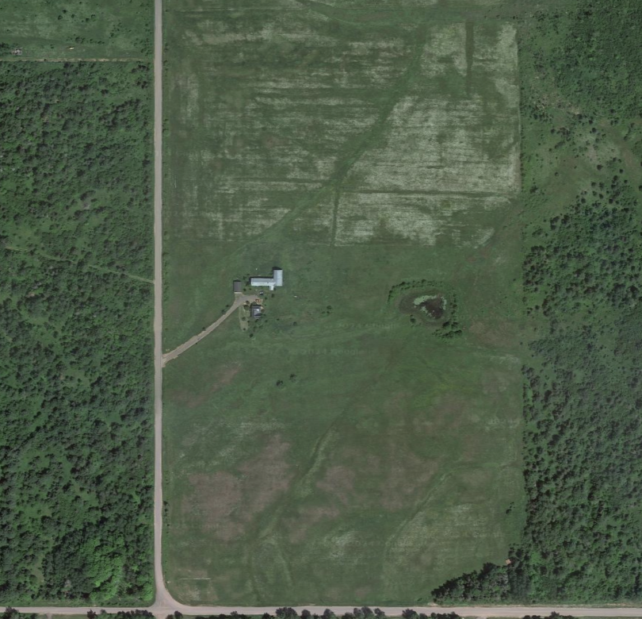

picture this...
(scroll down to read more about me! ↓)

from 20 acres to the big city
It's nice to meet you! My name is Fanny (pronounced like the baby deer), and I'm a Junior at the Univeristy of Michigan studying Computer Science with a minor in UX Design. I grew up in the Upper Peninsula of Michigan, a place filled with creativity and exploration.
I wanted to pursue something creative that could help people. This led me to Computer Science and UX Design, as both are extremely multidisciplinary. I’m really passionate about the interdisciplinary connections between technology, human behavior, and design. There’s a few main things I’m currently or was recently involved in: I am a teaching assistant for EECS 183 (Intro to Programming), and I’m involved in Atlas Digital, a tech consulting club on campus, where I’ve worked on projects such as an internal application portal, and currently I’m working for General Motors to create a database management system. I’m really excited to begin my career in software development, soon with Courier Health in New York, New York!
I like film and making videos, too. Here is a vlog of my first ever time visiting NYC (my future home this upcoming summer), a video I had a lot of fun making.
–––––––❤ Thanks for getting to know me. :)